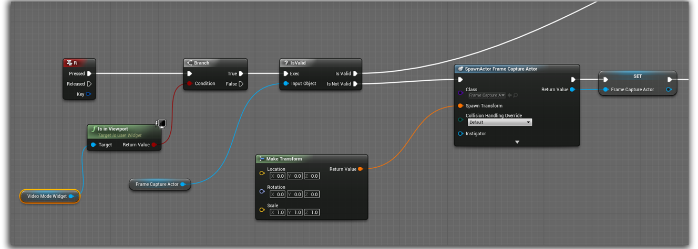

Take screenshots at any resolution , record and save videos in your hard disc , and adjust Depth of Field settings of your camera to give a beautiful photographic touch to your snapshots and videos.
FrameCapture is a C++ based library which lets you take snapshot of your game viewport at desired resolution, and record your in-game screen. You can adjust your camera's depth of field settings to create beautiful photographic images. You also have an option to display your UI screen in your snapshot or video output. Enabling UI screen will capture entire game window and hence will also display contents which are not directly rendered by your game viewport. You also have an option of converting your game screen into texture and display as UMG image format, and load image files from your hard disc as texture.
Get It HereAdjust Depth of Field Settings of your camera in real-time.
Take Screenshots at desired resolution.
Record and save in game video at desired framerate per second, with an option to record entire window, with UI elements
Although the base functionalities are written in C++ , to help you get started using this plugin, I have set up in depth example that is going to help you understand how this system is working, and how to implement this in your project.
You might be familiar with editor command that helps you take high res screenshot of your game at any point of time. To implement similar but customized feature, I had to create a seperate Viewport Client that is inherited from UGameViewportClient. My class is called UFrameCaptureViewportClient. So before you start implementing my plugin in your project, you need to add my viewport client class as your game viewport client.
Go to Edit -> Project Settings, and navigate to Engine -> General Settings. Then update your Game Viewport Client Class with FrameCaptureViewportClient.
The Post Process Depth of Field values can be adjusted for your current camera in order to create beautiful photographic views of your game viewport. I have exposed the post process DOF settings for the given camera component, and the settings are divided as Bokeh , Gaussian and Circular DOF.
Bokeh DOF mode of your camera component can be adjusted anytime by calling the function UpdateDOFBokeh and passing the necessary parameters.
| Inputs | Description |
|---|---|
| Scale | The Depth of Field Scale. |
| Near Transition | Width of the transition region on the near side with respect to the focal region. |
| Far Transition | Width of the transition region on the far side with respect to the focal region. |
| Focal Region | Region after focal distance, along which the objects are in focus. |
| Focal Distance | Distance at which the Depth of field value should be sharp, relative to the target hit by camera linetrace. |
| Max Bokeh Size | Maximum size of the Depth of Field blur. |
| Camera Component | The Camera Component for which to update the depth of field settings. |
| EndDistance | Maximum distance the line trace should target at, to find a valid object and adjust the focal length accordingly. |
Gaussian DOF mode of your camera component can be adjusted anytime by calling the function UpdateDOFGaussian and passing the necessary parameters.
| Inputs | Description |
|---|---|
| Near Transition | Width of the transition region on the near side with respect to the focal region. |
| Far Transition | Width of the transition region on the far side with respect to the focal region. |
| Focal Region | Region after focal distance, along which the objects are in focus. |
| Focal Distance | Distance at which the Depth of field value should be sharp, relative to the target hit by camera linetrace. |
| Near Blur Size | Maximum size of the Depth of Field blur in the near transition region. |
| Far Blur Size | Maximum size of the Depth of Field blur in the far transition region. |
| Camera Component | The Camera Component for which to update the depth of field settings. |
| EndDistance | Maximum distance the line trace should target at, to find a valid object and adjust the focal length accordingly. |
Circular DOF mode of your camera component can be adjusted anytime by calling the function UpdateDOFCircular and passing the necessary parameters.
| Inputs | Description |
|---|---|
| Focal Distance | Distance at which the Depth of field value should be sharp, relative to the target hit by camera linetrace. |
| Aperture FStop | Ratio between the focal length and the aperture diameter. Higher numbers reduce the Depth of field effect. |
| Camera Component | The Camera Component for which to update the depth of field settings. |
You can take screenshots at any resolution and save to your hard disc. You have an option to use your viewport resolution, or take highres screenshot at custom resolution. You can also Show UI elements in your screenshots. I have used OpenCV library to capture entire window, so if you are showing UI elements, you need to play in a seperate standalone window, not in your viewport, and you cannot take highres screenshots in this case.
Taking Screenshot is not an instant process and there may be a noticeable time difference between the frame at which the screenshot is requested and the frame at which the screencapture is finished, specially when you have requested a screen capture at a high resolution (4K and above). To facilitate the process, I have created an actor called AFrameCaptureActor, which is responsible for requesting for screen capture and broadcast notification once the screen capture is finished. You can either choose to save the screenshot in hard disc or display the result as texture in viewport UI. This actor also records videos, and we will see how in the next section.
Spawning the FrameCapture Actor
Before you can request your viewport client for a screen capture, you need to spawn an instance of AFrameCaptureActor class. I have created a widget and I am spawning this actor in the Construct event, and saving the spawned actor in a variable for later use.
Requesting a new Screen Capture
Once you have a valid spawned FrameCapture actor, you are allowed to request for a new screen capture. For initializing a new screen capture, you need to get a reference of your spawned FrameCapture actor, and call the function InitializeScreenCapture.
| Inputs | Description |
|---|---|
| Target | The Spawned FrameCapture Actor reference. |
| Resolution X | Width of the Screenshot. This parameter is not relevant if the user chooses to use viewport resolution. |
| Resolution Y | Height of the Screenshot. This parameter is not relevant if the user chooses to use viewport resolution. |
| Use Viewport res | Whether to use Viewport resolution as the Screenshot resolution. |
| FileName | The file name along with path, where the user wishes to save the Screenshot. Not relevant if the user does not wish to save the Screenshot in hard disc. |
| Save to Disc | If the user wants to save the Screenshot to the hard disc. You can keep this unchecked if you want to read the captured data as byte array instead and convert into UTexture2D. |
Binding the ScreenshotSaved Event
Since capturing screenshot is not an instant process and happens asynchronously, you have to bind the OnScreenshotSaved event of your FrameCapture actor to get notified to when the screenshot is saved.
To take Screenshots with your UI elements visible, you don't need the FramCapture actor, you just need to call the function TakeSnapshotwithUI and specify the filename where you want to save the file.
Instead of saving screenshots to the hard disc, you can also save your screenshot as textures and display as your UMG elements. Here also you have an option to display your UI elements.
Initializing a new Screen Capture
Assuming you already have a spawned a new instance of FrameCapture actor, here also at first you need to initialize a new screen capture by calling the function InitializeScreenCapture. But here you don't have to specify any filename and don't check the SaveToDisk option
Binding the ScreenCaptured Event
Once the screen capture is initialized, you need to bind the OnScreenCaptured event of your FrameCapture actor to get notified once the screen is successfully captured. This event will return texture format as output converted from the current viewport pixels. You can then use the texture (UTexture2D) to display in yuor UI.
You can load image files from hard disc and display as texture in your UI. This is a very useful features for instances like displaying thumbnails for saved game files, or loading and displaying avatars for MMORPG games.
To load an image file from your hard disc, you need to call the function LoadTexturefromPath and specify the full filename of the image file to be loaded.
You can record video at desired frame rate and save to your hard disc. Video recording is done at viewport resolution only. You also have an option to show your UI elements in the recorded video. The actor AFrameCaptureActor, is responsible for recording new videos as well.
Spawning the FrameCapture Actor
Before you can request your viewport client for a new video record, you need to spawn an instance of AFrameCaptureActor class. You can spawn it wherever you like, in your widget class or maybe in your character class like what I am doing here, and save the spawned actor in a variable.
Initializing the Recorder
Once you have a valid spawned FrameCapture actor, you can now start recording your video sequence. For initializing recording of a new sequence , you need to get a reference of your spawned FrameCapture actor, and call the function. InitializeRecorder. Video is always recorded at your viewport's resolution.
| Inputs | Description |
|---|---|
| Target | The Spawned FrameCapture Actor reference. |
| FPS | The FrameRate per second that you want your target video to be recorded at. |
| Show UI | Whether to show UI elements in the output video. |
| FileName | The file name along with path, where the user wishes to save the video. |
Pause the Resume Recording
You can pause and resume recording anytime adter the video recording is initialized, by get a reference of your spawned FrameCapture actor and calling the function TogglePauseRecorder.
Stop Recording
To stop recording, get your FrameCapture actor and call the function StopRecorder. This must be done in order to release the video file that was currently being written.
Thank you for your time. I hope you find this plugin useful. For technical difficulties, feedback, suggestions, queries, kindly drop me a mail at sameek4@gmail.com. I would love to hear from you.